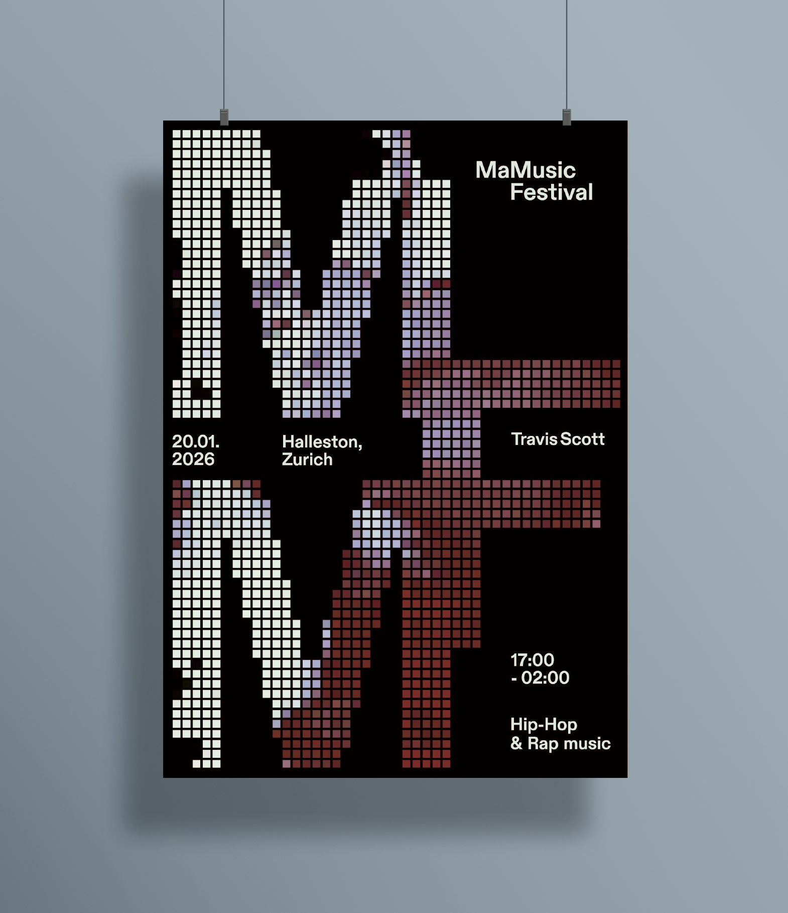

Luciana
Millenaar
Graphic &
Digital design
Dark mode
Upd. 12.2025
| Project | Type | Year |
|---|---|---|
| De donde vienes? | Book | 2025 |
|
Editorial project that collects the written testimony of Jany Schümperli, who emigrated from Switzerland to Argentina shortly before World War II. The text has been laid out with attention to narrative rhythm and enriched with photographs preserved in their authentic form. Two different fonts were used to distinguish and enhance the different parts of the story, reinforcing its personal and intimate dimension. The volume is structured in chapters dedicated to the places traversed by Jany, creating a visual and textual journey that accompanies the reader through spaces and memories. 


|
||
| Blabla | Brand identity | 2025 |
|
Branding project aimed at creating the visual and communicative identity of a lip balm with an ironic and fun concept: the product "transforms" those who use it into perfect liars. The brand identity has been developed in its entirety, including design, communication tone, packaging and all the elements necessary to create a coherent, recognizable experience faithful to the playful and provocative nature of the product. The brand identity plays on the contrast between bold and soft shapes, which represent lies, and more rigid and linear characters, symbol of truth. The dualism between truth and lies runs through the entire project, from identity to color palette, creating a continuous visual game between deception and sincerity. 


|
||
| Emergenza terra | Poster | 2024 |
|
Poster created for a series of conferences on sustainability, held at SUPSI in Mendrisio. The project highlights the ecological theme and environmental conflict through an intense and reflective visual composition, where the contrast between positive and negative reinforces the sense of urgency related to the themes addressed during the conferences, sparking a deeper global awareness. 


|
||
| Permafrost | Poster | 2024 |
|
Creation of a poster dedicated to permafrost in the Ticino Alps, designed to make a complex topic immediately understandable through infographics and clear graphs. The poster's objective is to raise awareness about the importance of environmental changes. The figure 0.07, rendered in marked dimensions, becomes a key visual element, emphasizing temperature increase in an immediate and direct way. The choice of blue, dominant in the layout, reinforces the evocation of cold and permafrost, creating a coherent chromatic language that links scientific content and visual impact. 


|
||
| Festival | Poster | 2025 |
|
Promotional campaign for Travis Scott’s Zurich show, featuring both a static poster and its animated version. In the latter, the visuals displayed within the typography are perfectly synced to the track’s beat, creating a visual rhythm that follows the audio. The project merges the rigorous grid of print design with the raw energy of audio-reactive digital content.

|
||
| Mamusic | Website | 2024 |
|
Website dedicated to discovering and purchasing tickets for hip-hop and rap concerts. The platform adopts a black and yellow palette that reflects the strength and raw energy of the culture. Bold typography, visuals inspired by street aesthetics and a fluid user experience allow you to explore artist profiles, check scheduled events and purchase tickets in just a few clicks. 


|
||
| Residency Futures | Website | 2025 |
|
A redesign of the residency section for Futures, a platform for emerging photographers. The project aims to elevate the program’s perceived value through a more information-rich and visually engaging interface. The restructuring is designed to guide talent clearly and intuitively, turning the page into a strategic tool to attract new international participants from across the globe. |
||
| Futures Education | Website | 2025 |
|
Design and implementation of a new area for the Futures platform dedicated to photography education. The project defines the architecture of a previously non-existent section, enabling the brand to launch its educational offerings. The modern layout is designed to host courses and lessons, seamlessly integrating teaching into the Futures digital ecosystem. |
||
| Sound of music | App | 2024 |
|
Design of an interface for a music streaming platform characterized by a delicate, soft and relaxing aesthetic. The visual atmosphere is built through the use of pastel colors and rounded graphic elements, with the aim of offering a pleasant and welcoming experience to the user. 


|
||
| World clock | Widget | 2025 |
|
World Clock Inspired by the QLOCKTWO aesthetic, this desktop widget developed in Electron transforms timekeeping into a purely typographic experience. Rather than tracking seconds, the grid interface illuminates words at five-minute intervals, offering a more reflective and less fragmented perception of time. The project establishes a direct link with the hardware: the white letters pulse in real-time based on the CPU load. This dynamic feedback transforms invisible technical data into an organic visual signal, making the computer's effort palpable as time flows. 

|
||
| In movimento | Animation | 2024 |
|
A motion design study based on the identity analysis of Airbnb, Max Museo, and Spotify. The project begins with in-depth research into each company’s mission, vision, and values to translate their DNA into motion. Each animation results from a strategic process aimed at ensuring total consistency between the brand’s heritage and its digital dynamics, turning core values into rhythm and form. |
||
CONTACT
Lugano, Switzerland
+41 79 854 67 89
luli.millenaar@gmail.com
ABOUT ME
Visual Communication Designer with a specialized focus on digital media and interface design. My professional practice merges creativity and communicative strategy, transforming complex concepts into intuitive user experiences (UX/UI) and high-impact editorial solutions. I develop projects ranging from static design to motion and functional programming. My approach is defined by extreme precision and attention to detail, supported by strong problem-solving skills and a natural inclination for team collaboration. I am constantly seeking challenges that allow me to consolidate my technical expertise and engage with dynamic.